Best Nature & City Attractions in Mindanao
| 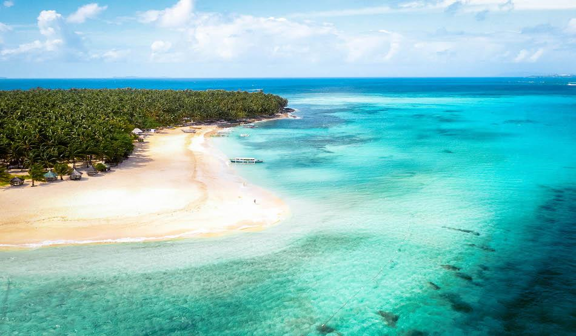 |
| Dako Island |
| At Dako Island, you will experience the serenity of the sea. Dive in for a swim, snorkel in the crystal-clear seas around
the island, or simply relax and enjoy the sun. Bring a picnic or a snack to eat in a rented bungalow on the beach, which will put you in the shade.
Locals can also sell you fresh coconut on the spot. The Pacific Ocean breezes cool you down, and with only a few people on the island, you can relax on the peaceful, white, sandy beaches.
|
| Location: Siargao |
| Ratings: ★★★★★ |
| 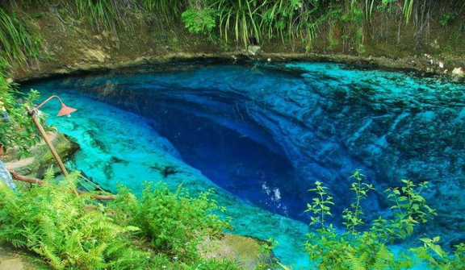 |
| Enchanted River |
| Enchanted River is concealed by the Philippine jungle, it is also known as Hinatuan Sacred River.
An uneven pathways with natural steep steps lead to the river, where you may swim in 15 m (50 ft) of salt water and watch the fish feeding at noon.
You can also rent a small boat and go out on the water. Legends of fairies, ancestral spirits, and uncatchable fish have been told about the river's jade and sapphire waters.
The origin of the river and its depth is still unknown, but it has yet to be discovered by ongoing explorations.
|
| Location: Hinatuan, Surigao del Sur |
| Ratings: ★★★★★ |
| 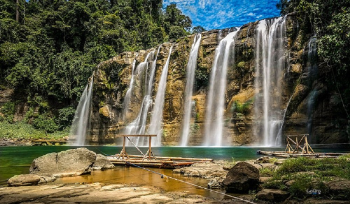 |
| Tinuy-an Falls |
| Tinuy-an Falls has been featured in various worldwide promotions that provides visitors with breathtaking
photo opportunities due to its attractive appearance. The waterfall, which is 95 meters (311 feet) broad and 55 meters (180 feet) high, is commonly referred
to as the Philippines' Little Niagara Falls. Its multi-tiered waterfall makes it the country's biggest waterfall. You can take rafts up to the deluge for a "water massage,"
and keep an eye out for a rainbow around the waterfall every day between 9 and 11 a.m., when the rising sun catches the water at just the perfect angle.
|
| Location: Borboanan, Bislig, Surigao del Sur |
| Ratings: ★★★★★ |
| 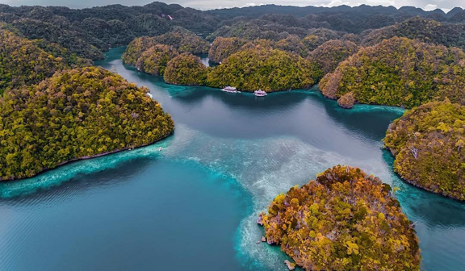 |
| Sohoton Lagoon |
| Swim and explore the tunnels surrounding the surreal blue Sohoton Lagoon. You must first pass via the nearby cove to get
to the lagoon, which is part of a national park. Snorkel to see the coral and rock formations, which are easily visible due to the lagoon's crystal-clear water.
The caverns and seven islets that surround the lagoon can also be explored. Large numbers of jellyfish may gather in some areas of the lagoon, but don't worry—they won't sting you.
|
| Location: Socorro, Surigao del Norte |
| Ratings: ★★★★★ |
| 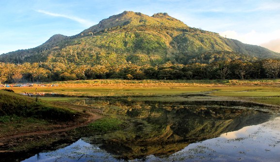 |
| Mount Apo |
| Mount Apo is a well-known place in the Philippines, in addition to being a popular tourist attraction in Mindanao.
It is the country's highest point, at 3,144 meters above sea level, earning it the title "Grandfather of All Philippine Mountains." With a height of more than 3,000 meters
above sea level, Mt. Apo is set to be a popular mountaineering destination in the Philippines. Those that climb to the top and explore the various peaks will be blessed with
breathtaking views of Davao, Mt. Matutum, Lake Venado, and other provinces in the area.
|
| Location: Between Davao City, Davao del Sur province and Cotabato province |
| Ratings: ★★★★★ |
| 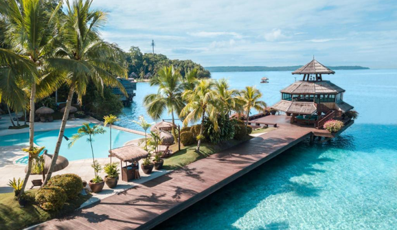 |
| Island Garden City of Samal |
| The Island Garden City of Samal is the pride and joy of Davao City. The island is a popular vacation spot for both locals
and visitors. It's just 2 kilometers away from the Davao City coastline. The island's hems are fringed with lovely white sand beaches with sandy coasts that span for
118 kilometers around the island and pristine waters that are home to a diverse array of marine life.Samal's coasts, like Cebu's Malapascua Island, are filled with both high-end and mid-range beaches,
each with its own set of services and amenities to make everyone's visit a memorable one.
|
| Location: Samal, Davao del Norte |
| Ratings: ★★★★★ |
| 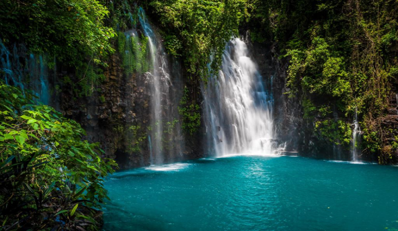 |
| Tinago Falls |
| Tinago Falls, tucked away in a beautiful ravine, is a location where legends and nature collide.
To get there, you must descend hundreds of stairs until you see a mist of water falling into a clear lake. To hear the water drumming, enter the small
tunnel beneath the pool. Inquire with the locals about an old tradition about a king and queen who wronged an enchantress, who then punished them by making
their daughter ugly. They hid the child in a cave, and she morphed into to this beautiful waterfalls.
|
| Location: Iligan City, Lanao del Norte |
| Ratings: ★★★★★ |
| 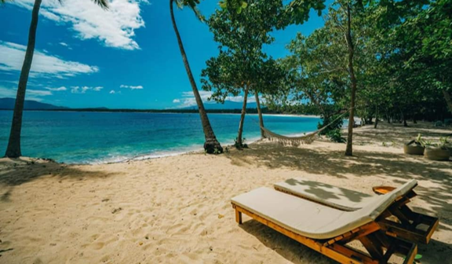 |
| Dahican Surf Resort |
| Dahican Surf Resort is well-known among surfers and skimboarders for its beautiful beach and exciting waves.
The word "Dahican" derives from the word "Dahik," which is a local term for coming in from the sea to nest, which perfectly portrays surfers returning home after a day on the water.
Under Republic Act No. 9147, the resort also serves as a shelter for endangered marine turtles. Sea turtles will be seen coming in from the sea and onto the sandy shores,
which will delight animal lovers.
|
| Location: Mati, Davao Oriental |
| Ratings: ★★★★★ |
| 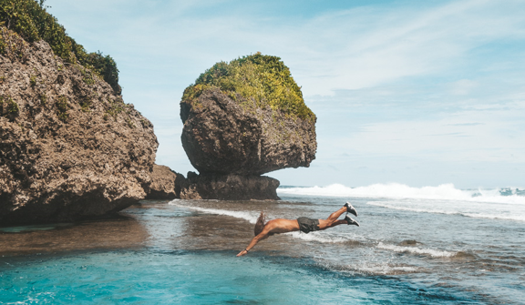 |
| Magpupungko Rock Pools |
| The Magpupungko Rock Pools are a popular day trip destination that can only be visited during low tide.
It's a great place to spend hours exploring and jumping off the numerous boulders that emerge from the shallow waters. While having a dive in the rock pools,
the rock formations remain firm while waves crash against them, creating an oddly gratifying scene.
|
| Location: Siargao |
| Ratings: ★★★★★ |
| 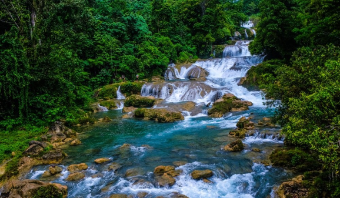 |
| Aliwagwag Falls |
| Aliwagwag Falls is a beautiful waterfall in Mindanao. It's known for its 84-tiered falls, which feature more than 130 cascades
and staircase-like rock formations. Because of the immense scale of this magnificent waterfall, the entire length of cascading waters has been transformed into an ecopark,
allowing visitors to safely explore and admire the cascades' magnificence.The Aliwagwag Falls Ecopark has a hiking track that leads up and around the left side of the falls.
Aside from hiking, guests can participate in a variety of activities such as Zipline and a 45-meter long Monkey bridge. The greatest way to observe Aliwagwag Falls is to take
a leisurely plunge in the crystal clear water.
|
| Location: Cateel, Davao Oriental |
| Ratings: ★★★★★ |
| 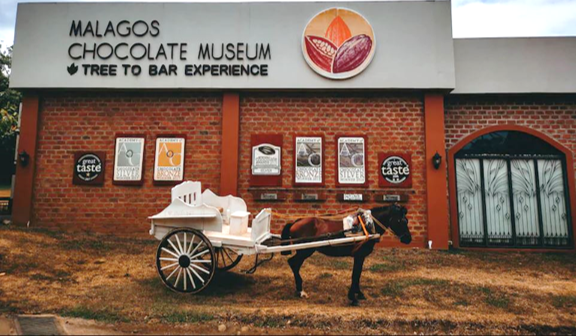 |
| Malagos Chocolate Museum |
| The Malagos Chocolate Museum is the Philippines' first of its kind since it began to open its door to the public in 2017.
The museum is divided into 4 sections. First is the museum section itself where it provides infographics, AVP, audio lectures, and interactive displays where you will learn about
the wonders of cacao and chocolate-making. The second section is the Interactive Zone where you can play games with Beanie, the Malagos Chocolate mascot. The next section is the
Chocolate Bar where you can enjoy all sorts of Malagos Chocolate food and drinks. And the last section is the Chocolate Laboratory where you can make your own chocolate.
Chocolate enthusiasts in Davao, as well as their families and friends, will definitely like the museum. Everyone is welcome to come and learn about cacao and chocolates
while having fun.
|
| Location: Malagos, Baguio District in Calinan, Davao City |
| Ratings: ★★★★★ |
| 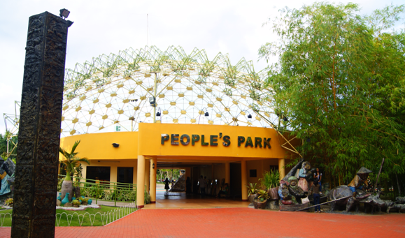 |
| People's Park |
| People's Park is a well-kept public park in the heart of the city, with a massive monument of the Philippine Eagle,
a Durian-inspired dome, intriguing sculptural works by local artists, and paved walking routes covered by trees. It is one of the local's favorite hangout spot in Davao
where you can freely walk, relax and enjoy the breeze.
|
| Location: Davao City |
| Ratings: ★★★★☆ |
| 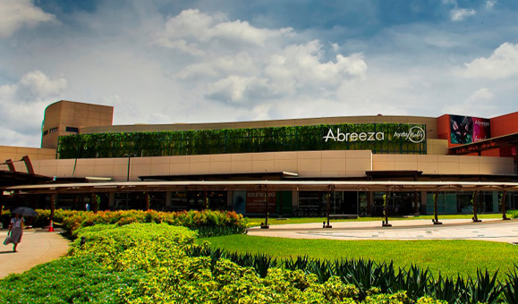 |
| Abreeza Mall |
| Abreeza Mall, which opened in 2011, is Davao City's most popular shopping mall. The businesses are spread out over
three stories, with a huge central event area and a massive Robinsons department store in the center. On the ground floor, there is a good selection of cafes along the
perimeter, as well as an open-air food court area on the upper floor.
|
| Location: Davao City |
| Ratings: ★★★★☆ |
| 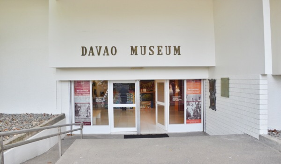 |
| Davao Museum |
The first ethnographic museum in Davao is the Davao Museum. It features the indigenous peoples of Southern Mindanao's
culture. The museum collections include old maps of Mindanao and the Philippines, trade jars, burial urns, weaponry, jewelry, personal adornments, musical instruments,
tribal clothing, handicrafts and pottery. In addition, a special section highlights the importance of traditional fabric weaving, which is still practiced today.
Entrance Fee:
P100 for adults
P20 for students
|
| Location: Davao City |
| Ratings: ★★★★★ |
| 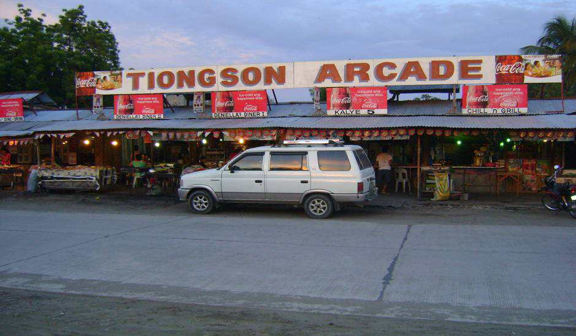 |
| Tiongson Arcade |
| The Tiongson Arcade is a famous tourist destination in Gensan. It is a heavenly place for food lovers. It's a series of
food courts that appeals to a wide range of people, it offers chicken, fish, and tuna meals, as well as barbecue. It's a well-known night market that attracts both locals
and foreigners.
|
| Location: General Santos City |
| Ratings: ★★★★★ |
| 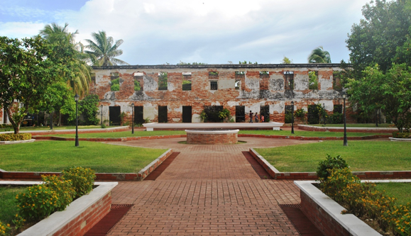 |
| Fort Pilar |
| The well-kept grounds, vacant jail cells, and dilapidated walls of Fort Pilar feels like a portal into the past,
telling the narrative of how Zamboangeños struggled for their independence. A National Museum houses valuable artifacts and collections related to the region's history
and culture, as well as a shrine frequented by Roman Catholic devotees.
|
| Location: Zamboanga City |
| Ratings: ★★★★★ |
| 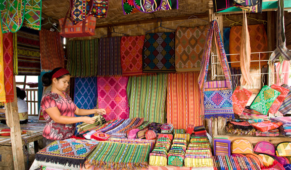 |
| Yakan Weaving Village |
| This simple village has a wide variety of colorful, locally made items on display, such as placemats,
table runners, brassware, and mass-produced batik with the traditional geometric design. They sell accessories, souvenirs, and antiquities in addition to
woven fabrics and garments. And tourists have the opportunity to see how the Yakans weave their famous products.
|
| Location: Zamboanga City |
| Ratings: ★★★★☆ |
| 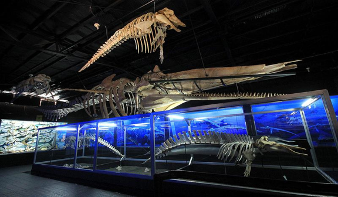 |
| D’Bone Collector Museum |
Darrell D. Blatchley, an American bone collector, founded this small museum in 2012 with the goal of educating
people about environment protection (some of the marine animals displayed died as a result of ingesting plastic, for example). The collection includes preserved remains,
skulls, and bones of bears, lions, horses, deer, monkeys, snakes, and more, but the prized possession is the skeleton of a 41-foot sperm whale. Blatchey has collected
some of these since childhood, while others have been donated to the museum from all over the world, including Canada, Russia, Indonesia, Thailand, and the Philippines.
Entrance Fee:
P100
|
| Location: Davao City |
| Ratings: ★★★★★ |
| 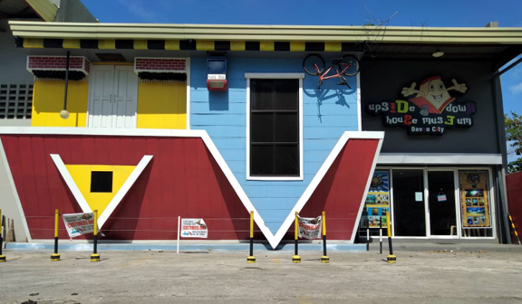 |
| Upside Down House Museum |
The Upside Down House Museum was inspired by the famous KL Upside Down House in Kuala Lumpur, Malaysia,
and is thought to be Mindanao's first upside down house-inspired museum. It is the perfect place for family and friends who makes Instagram their inner hangout.
And make sure to bring your own socks so you don't have to pay an extra fee.
Entrance Fee:
P100
|
| Location: Davao City |
| Ratings: ★★★★☆ |
| 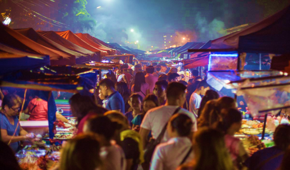 |
| Roxas Avenue Night Market |
| Davao's famous night market is a great place to try the local street food. The Roxas Avenue Night Market starts
near the Marco Polo hotel and continues about a kilometer southeast down Roxas Avenue. Most food stalls offer grilled foods such as skewered chicken, beef, pork belly,
and tuna, but there are more options other than that. The prices are cheap and the atmosphere is enthusiastic.
|
| Location: Poblacion District, Davao City |
| Ratings: ★★★★★ |
References
https://www.inspirock.com/philippines/natural-attractions-in-mindanao • https://www.tripadvisor.com.ph/Attractions-g294252-Activities-c57-Mindanao.html • https://twomonkeystravelgroup.com/towns-cities-must-visit-in-mindanao/
• https://thehappytrip.com/2019/10/tourist-spots-in-mindanao/